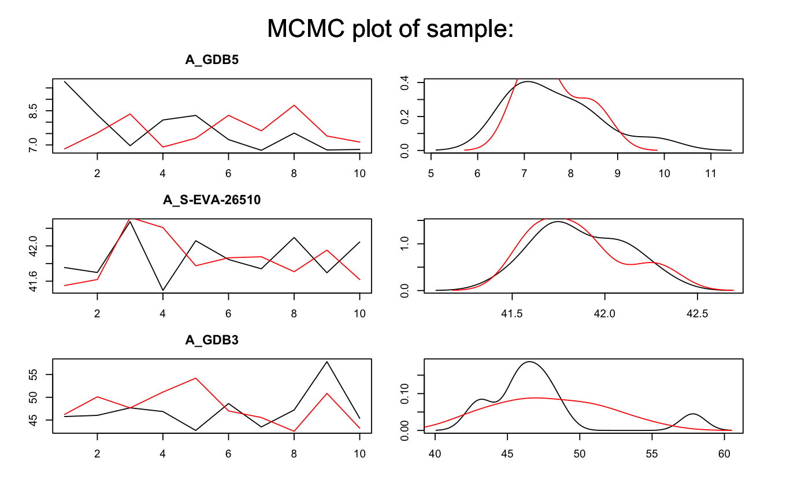
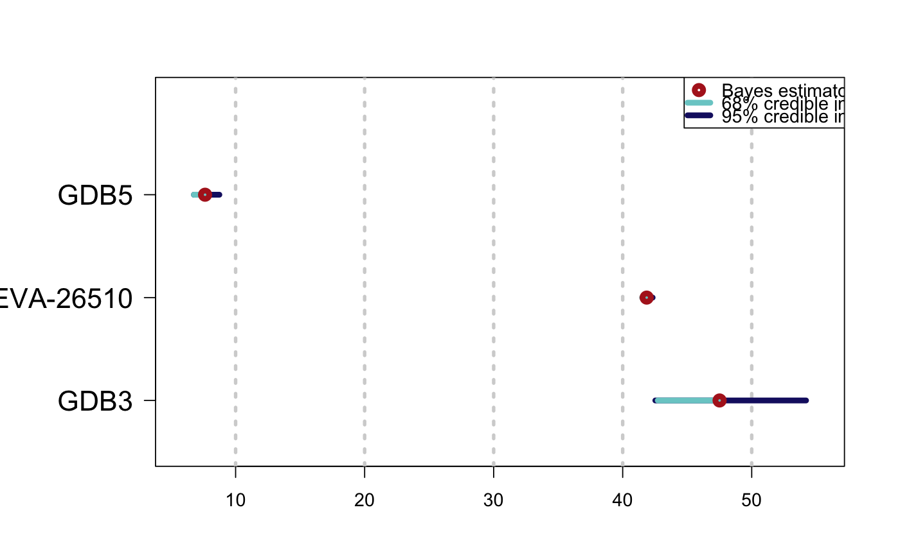

This function compute an age of OSL data of at least two samples and calibrate 14C ages of samples to get an age (in ka).
Age of OSL data are computed according to the model given in Combes and Philippe (2017).
Single-grain or Multi-grain OSL measurements can be analysed simultaneouly (with output of Generate_DataFile
or Generate_DataFile_MG or both of them using Concat_DataFile).
Samples, for which data is avalilable in several BIN files, can be analysed.
For C14 data, the user can choose one of the following radiocarbon calibration curve:
Northern or Sourthen Hemisphere or marine atmospheric.
Age_OSLC14(DATA, Data_C14Cal, Data_SigmaC14Cal, Nb_sample, SampleNames, SampleNature, PriorAge = rep(c(10, 60), Nb_sample), SavePdf = FALSE, OutputFileName = c("MCMCplot", "HPD_Cal14CCurve", "summary"), OutputFilePath = c(""), SaveEstimates = FALSE, OutputTableName = c("DATA"), OutputTablePath = c(""), StratiConstraints = c(), sepSC = c(","), BinPerSample = rep(1, sum(SampleNature[1, ])), THETA = c(), sepTHETA = c(","), LIN_fit = TRUE, Origin_fit = FALSE, distribution = c("cauchy"), Model_C14 = c("full"), CalibrationCurve = c("AtmosphericNorth"), Iter = 50000, t = 5, Nb_chaines = 3)
| DATA | list of objects: LT, sLT, ITimes, dLab, ddot_env, regDose, J, K, Nb_measurement,
provided by the function |
|---|---|
| Data_C14Cal | numeric vector: corresponding to 14C age estimate (in years, conversion in ka is automatically donne in the function).
If there is stratigraphic relations between samples, |
| Data_SigmaC14Cal | numeric vector: correponding to the error of 14C age estimates. |
| Nb_sample | integer: number of samples (OSL data and 14C age),
( |
| SampleNames | character vector: sample names for both OSL data and C14 data. The length of this vector is equal to |
| SampleNature | numeric matrix: states the nature of the sample.
Row number of |
| PriorAge | numeric vector (with default): lower and upper bounds for age parameter of each sample (in ka).
Note that, |
| SavePdf | boolean (with default): if TRUE save graphs in pdf file named |
| OutputFileName | character (with default): name of the pdf file that will be generated by the function if |
| OutputFilePath | character (with default): path to the pdf file that will be generated by the function if |
| SaveEstimates | boolean (with default): if TRUE save Bayes estimates, credible interval at level 68% and 95% and
the result of the gelman en Rudin test of convergency, in a csv table named |
| OutputTableName | character (with default): name of the table that will be generated by the function if |
| OutputTablePath | character (with default): path to the table that will be generated by the function if |
| StratiConstraints | numeric matrix or character(with default): input object for the statigraphic relation between samples.
If there is stratigraphic relation between samples see the details section for instructions regarding how to correctly fill |
| sepSC | character (with default): if |
| BinPerSample | integer vector (with default): vector with the number of BIN files per OSL sample.
The length of this vector is equal to the number of OSL samples.
|
| THETA | numeric matrix or character (with default): input object for systematic and individual error for OSL samples.
If systematic errors are considered, see the details section for instructions regarding how to correctly fill |
| sepTHETA | character (with default): if |
| LIN_fit | logical (with default): if TRUE (default) allows a linear component, on top of the (default) saturating exponential curve, for the fitting of dose response curves, for OSL samples. See details for more informations on the proposed dose response curves. |
| Origin_fit | logical (with default): if TRUE, forces the dose response curves to pass through the origin. See details for more informations on the proposed growth curves, for OSL samples. |
| distribution | character (with default): type of distribution that defines how individual equivalent dose values are distributed around the palaeodose, for OSL samples. Allowed inputs are "cauchy", "gaussian", "lognormal_A" and "lognormal_M", see details for more informations. |
| Model_C14 | character (with default): if "full", error on estimate calibration curve is taken account, for 14C samples. If "naive" this error is not taken account in the age estimate. |
| CalibrationCurve | character (with default): calibration curve choosen, for 14C samples. Allowed inputs are
|
| Iter | integer (with default): number of iterations for the MCMC computation (for more information see |
| t | integer (with default): 1 every |
| Nb_chaines | integer (with default): number of independent chains for the model (for more information see |
NUMERICAL OUTPUT
A list containing the following objects:
Sampling: that corresponds to a sample of the posterior distributions of the age parameters (in ka for both C14 samples and OSL samples);
PriorAge: stating the priors used for the age parameter;
StratiConstraints: stating the stratigraphic relations between samples considered in the model;
Model_OSL_GrowthCurve: stating which dose response fitting option was chosen;
Model_OSL_Distribution: stating which distribution was chosen to model the dispersion of individual equivalent dose values around the palaeodose of the sample;
Model_C14: stating which model was chosen ("full" or "naive");
CalibrationCurve: stating which radiocarbon calibration curve was chosen;
Outlier: stating the names of samples that must be outliers.
The Gelman and Rudin test of convergency: prints the result of the Gelman and Rudin test of convergency for the age estimate for each sample.
A result close to one is expected.
In addition, the user must visually assess the convergency of the trajectories by looking at the graph
generated by the function (see PLOT OUTPUT for more informations).
If both convergencies (Gelman and Rudin test and plot checking) are satisfactory,
the user can consider the estimates as valid.
Otherwise, the user may try increasing the number of MCMC interations (Iter)
or be more precise on the PriorAge parameter to reach convergency.
Credible intervals and Bayes estimates: prints the Bayes esitmates, the credible intervals at 95% and 68% for the age parameters for each sample.
PLOT OUTPUT
MCMC trajectories: A graph with the MCMC trajectories and posterior distributions of the age parameter is displayed. On each line, the plot on the left represents the MCMC trajectories, and the one on the right the posterior distribution of the parameter.
Age estimate and HPD at 95% of 14C samples on calibration curve: plot age estimate and HPD on calibration plot.
Summary of sample age estimates: plot credible intervals and Bayes estimate of each sample age on a same graph.
Note that there is tree type of arguments in the previous list.
There are arguments for informtations concerning only OSL samples: DATA, BinPerSample, THETA,
sepTHETA, LIN_fit, Origin_fit, distribution.
There are arguments for informtations concerning only C14 samples: Data_C14Cal, Data_SigmaC14Cal,
Model_C14, CalibrationCurve.
There are arguments for informtations concerning all the samples: Nb_sample, SampleNames, SampleNature,
PriorAge, SavePdf, OutputFileName, OutputFilePath, SaveEstimates, OutputTableName,
OutputTablePath, StratiConstraints, sepSC.
** How to fill StratiConstraints ? **
If there is stratigraphic relations between samples, 14C estimate age in Data_C14Cal must be ordered by order of increasing ages,
as informations in DATA. Names in SampleNames must be ordered and correponds to the order in Data_C14Cal and in DATA,
also if it is needed to mix names of OSL samples and 14C samples.
The user can fill the StratiConstraints matrix as follow.
Size of the matrix: row number of StratiConstraints matrix is equal to Nb_sample+1,
and column number is equal to Nb_sample.
First line of the matrix:
for all i in {1,...,Nb_Sample}, StratiConstraints[1,i]=1 that means the lower bound of the sample age (given in PriorAge[2i-1])
for the sample whose number ID is equal to i, is taken into account.
Sample relations: for all j in {2,...,Nb_Sample+1} and all i in {j,...,Nb_Sample},
StratiConstraints[j,i]=1 if sample age whose number ID is equal to j-1 is lower than sample age whose number ID is equal to i.
Otherwise, StratiConstraints[j,i]=0.
Note that StratiConstraints_{2:Nb_sample+1,1:Nb_sample} is a upper triangular matrix.
The user can also use SCMatrix or SC_Ordered (if all samples are ordered) function to construc
the StratiConstraints matrix.
The user can also refer to a csv file that containts the relation between samples as defined above.
The user must take care about the separator used in the csv file using the argument sepSC.
** How to fill THETA covariance matrix concerning common and individual error? **
If systematic errors are considered, the user can fill the THETA matrix as follow.
row number of THETA is equal the column number, equal to Nb_sample.
For all i in {1,...,Nb_sample}, THETA[i,i] containts individual error
plus systematic error of the sample whose number ID is equal to i.
For all i,j in {1,...,Nb_sample} and i different from j ,
THETA[i,j] containts common error between samples whose number ID are equal to i and j.
Note that THETA[i,j] is a symetric matrix.
The user can also refer to a .csv file that containts the errors as defined above. ** Option on growth curves **
As for Age_Computation and Palaeodose_Computation, the user can choose from 4 dose response curves:
Saturating exponential plus linear growth (AgesMultiCS2_EXPLIN):
for all x in IR+, f(x)=a(1-exp(-x/b))+cx+d; select
LIN_fit=TRUE
Origin_fit=FALSE
Saturating exponential growth (AgesMultiCS2_EXP):
for all x in IR+, f(x)=a(1-exp(-x/b))+d; select
LIN_fit=FALSE
Origin_fit=FALSE
Saturating exponential plus linear growth and fitting through the origin (AgesMultiCS2_EXPLINZO):
for all x in IR+, f(x)=a(1-exp(-x/b))+cx; select
LIN_fit=TRUE
Origin_fit=TRUE
Saturating exponential growth and fitting through the origin (AgesMultiCS2_EXPZO):
for all x in IR+, f(x)=a(1-exp(-x/b)); select
LIN_fit=FALSE
Origin_fit=TRUE
** Option on equivalent dose distribution around the palaeodose **
The use can choose between :
cauchy: a Cauchy distribution with location parameter equal to the palaeodose of the sample
gaussian: a Gaussian distribution with mean equal to the palaeodose of the sample
lognormal_A: a log-normal distribution with mean or Average equal to the palaeodose of the sample
lognormal_M: a log-normal distribution with Median equal to the palaeodose of the sample
** More precision on Model **
We propose two models "full" or "naive". If Model='full' that means measurement error and error on calibration curve are taken account in
the Bayesian model; if Model="naive" that means only error on measurement are taken account in the mode.
More precisely, the model considered here, as the one developped by Christen, JA (1994), assume multiplicative effect of errors to address the problem of outliers. In addition, to not penalyse variables that are not outliers and damage theirs estimation, we introduce a structure of mixture, that means only variable that are considered as outlier have in addition a multiplicative error.
Reimer PJ, Bard E, Bayliss A, Beck JW, Blackwell PC, Bronl Ramsey C, Buck CE, Cheng H, Edwards RL, Friedrich M, Grootes PM, Guilderson TP, Haflidason H, Hajdas I, Hatte C, Heaton TJ, Hoffmann DL, Hogg AG, Hughen KA, Kaiser KF, Kromer B, Manning SW, Niu M, Reimer RW, Richards DA, Scott EM, Southon JR, Staff RA, Turney CSM, van der Plicht J. 2013. IntCal13 ans Marine13 radiocarbon age calibration curves 0-50000 years cal BP. Radiocarbon 55(4)=1869-1887.
Hogg AG, Hua Q, Blackwell PG, Niu M, Buck CE, Guilderson TP, Heaton TJ, Palmer JG, Reimer PJ, Reimer RW, Turney CSM, Zimmerman SRH. 2013. SHCal13 Southern Hemisphere calibration, 0-50000 years cal BP. Radiocarbon 55(4):1889-1903
## Load data # OSL data data(DATA1,envir = environment()) data(DATA2,envir = environment()) Data=Concat_DataFile(DATA2,DATA1) # 14C data C14Cal=DATA_C14$C14[1,1] SigmaC14Cal=DATA_C14$C14[1,2] Names=DATA_C14$Names[1] # Prior Age prior=rep(c(1,60),3) samplenature=matrix(data=c(1,0,1,0,1,0),ncol=3,nrow=2,byrow=TRUE) SC=matrix(data=c(1,1,1,0,1,1,0,0,1,0,0,0),ncol=3,nrow=4,byrow=TRUE) ## Age computation of samples Age=Age_OSLC14(DATA=Data,Data_C14Cal=C14Cal,Data_SigmaC14Cal=SigmaC14Cal, SampleNames=c("GDB5",Names,"GDB3"),Nb_sample=3,SampleNature=samplenature, PriorAge=prior,StratiConstraints=SC,Iter=50,Nb_chaines=2)#> Compiling model graph #> Resolving undeclared variables #> Allocating nodes #> Graph information: #> Observed stochastic nodes: 1446 #> Unobserved stochastic nodes: 1742 #> Total graph size: 36093 #> #> Initializing model #>#> Warning: Adaptation incomplete#> NOTE: Stopping adaptation #> #>#> #> #> >> Convergence of MCMC for the age parameters << #> ---------------------------------------------- #> Sample name Bayes estimate Uppers credible interval #> A_GDB5 1.01 1.18 #> A_S-EVA-26510 1.14 1.58 #> A_GDB3 1.63 3.64 #> #> #> ________________________________________________________________________________ #> *** WARNING: following informations are only valid if MCMC chains converged *** #> ________________________________________________________________________________ #> #> #> >> Bayes estimates of Age for each sample and credible interval << #> ------------------------------------------------------ #> Sample name Bayes estimate Credible interval: #> A_GDB5 7.244 #> lower bound upper bound #> at level 95% 5.99 8.86 #> at level 68% 6.41 7.68 #> ------------------------------------------------------ #> Sample name Bayes estimate Credible interval: #> A_S-EVA-26510 41.898 #> lower bound upper bound #> at level 95% 41.37 42.32 #> at level 68% 41.82 42.23 #> ------------------------------------------------------ #> Sample name Bayes estimate Credible interval: #> A_GDB3 49.148 #> lower bound upper bound #> at level 95% 42.86 59.23 #> at level 68% 42.19 50.87 #> #> ------------------------------------------------------